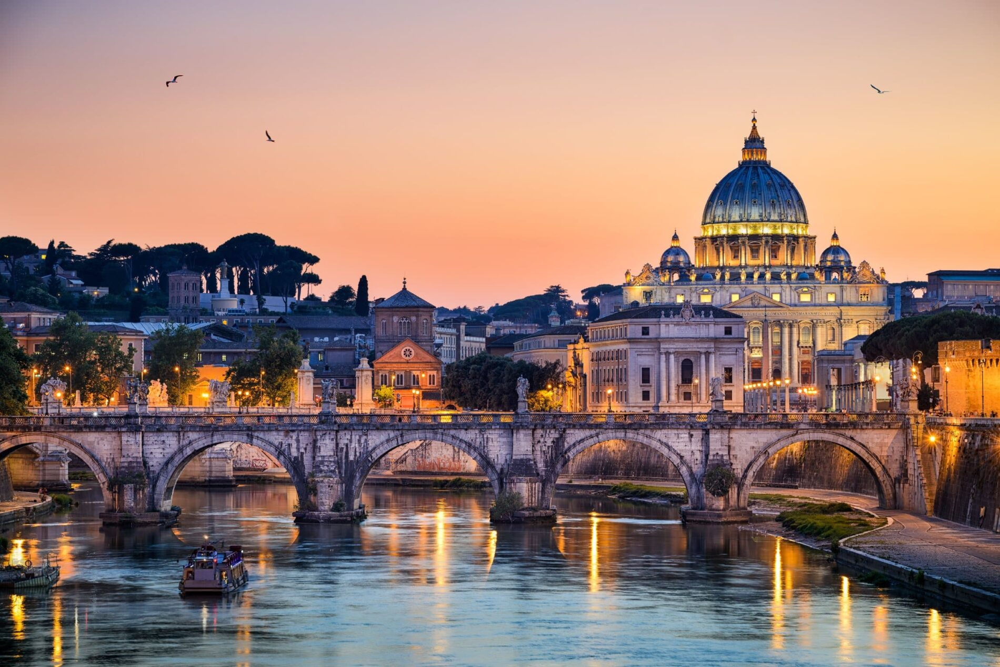

Los lagos de Masuria constituyen un entorno muy popular para los polacos que practican la vela o el piragüismo en ellos, o en los numerosos ríos y canales que comunican unos con otros. Pero no todo es agua. Esta región, alejada de las grandes ciudades y de sus núcleos industriales, constituye un remanso de naturaleza y tranquilidad
Roma, la capital de Italia, es una extensa ciudad cosmopolita que tiene a la vista casi 3,000 años de arte, arquitectura y cultura de influencia mundial. Las ruinas antiguas como las del Foro y el Coliseo evocan el poder del antiguo Imperio Romano. La ciudad del Vaticano, sede central de la Iglesia católica romana, cuenta con la Basílica de San Pedro y los Museos del Vaticano.
Puedes comprar las entradas para el Vaticano a partir del siguiente enlace
